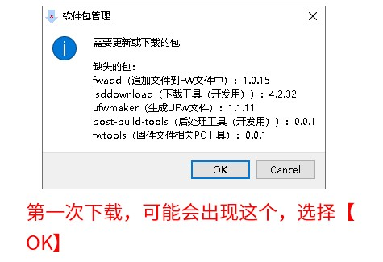
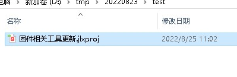
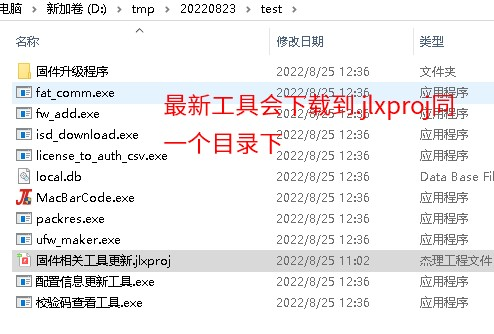

3.1. How to Upgrade Tools with a .jlxproj File
Some tools can be updated with a .jlxproj file. The main steps are as follows:
Make sure the Jieli package manager (click here to download) is installed. Once it is correctly installed, you can double-click a
.jlxprojfile to open it.Double-click the corresponding
.jlxprojfile to open it, as shown below:
Note
The screenshot is only a demonstration; it does not mean that you always open a file with the same name. Which file to open depends on what you need.
When you open it for the first time, a message about missing packages may appear (it may pop up once or twice). Select OK and wait for the installation to finish


Important
Note: Make sure your computer can connect to the Internet at this point. This tool connects to the Jieli server to download the latest tools.
If the program does not respond for a long time, check whether the taskbar shows a program with the icon below; if it does, click it to open it.

Once the window has loaded, it shows a [Check for updates] (检查更新) button. Click this button to check for and install tool updates

After the update is complete, the corresponding tools are downloaded to the directory where the
.jlxprojfile is located, as shown below:
